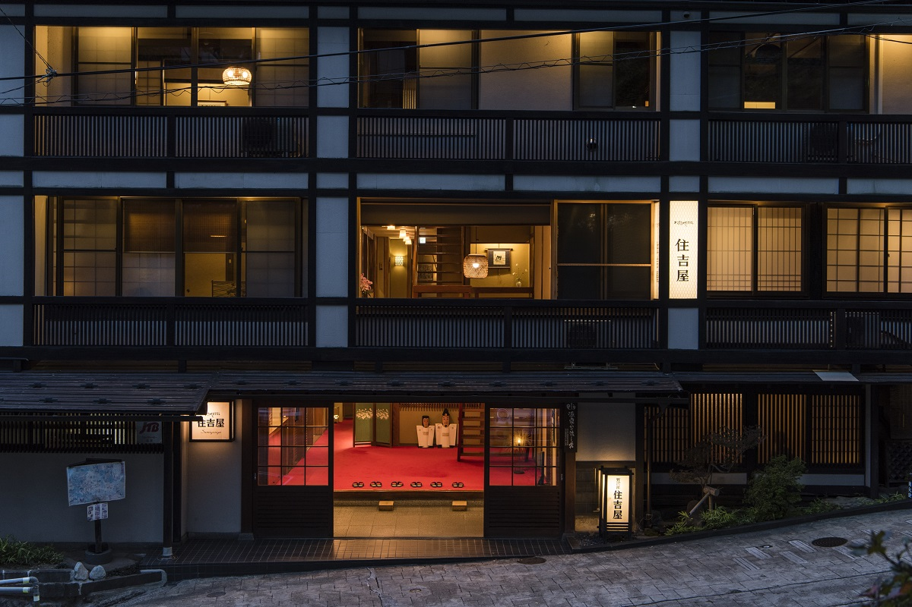
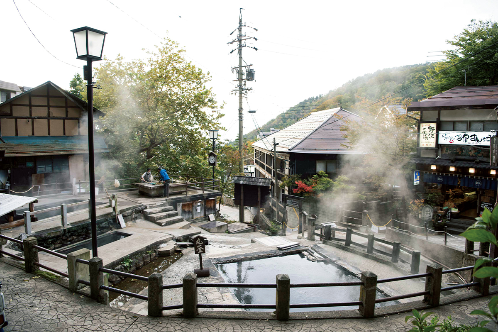
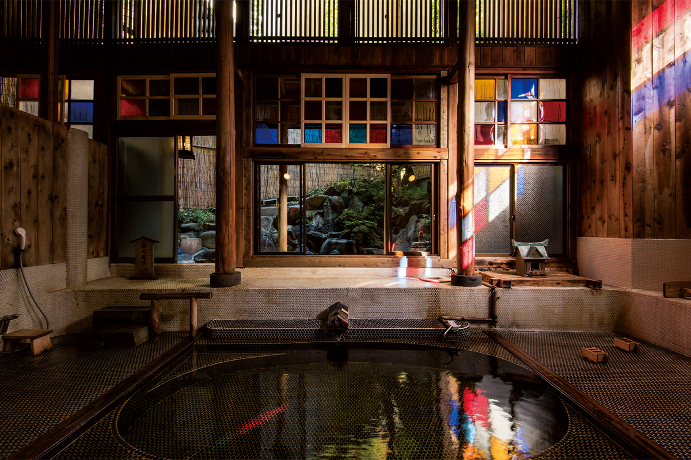
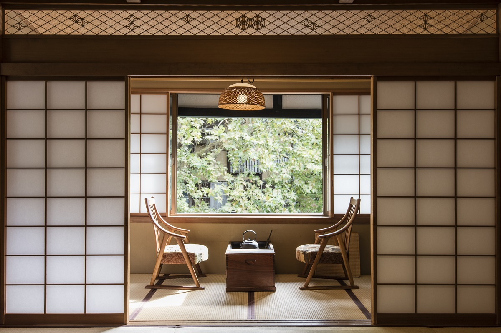
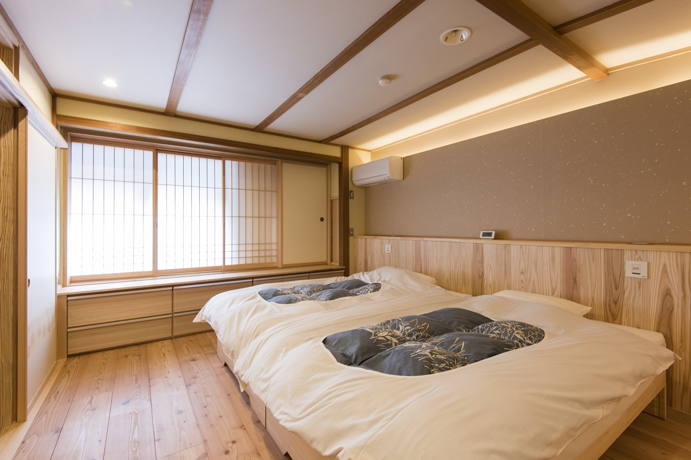
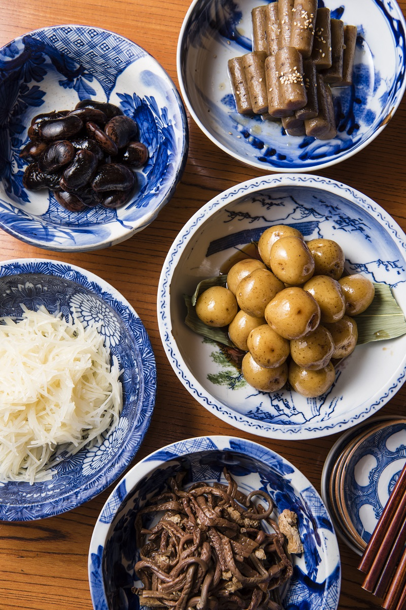

Префектура Нагано · Нодзава онсэн · где остановиться
Sumiyoshiya в Нодзаве: очень горячая вода и деревенский праздничный стол

В Нодзава онсэне горячая вода бьёт прямо посреди деревни, и купание здесь похоже на маленькое испытание. Гостиница Sumiyoshiya стоит у главного источника с 1869 года и кормит гостей тем, что в этих местах готовили к праздникам.
Место
Деревня, где кипит земля
Нодзава онсэн, деревня на севере префектуры Нагано, живёт вокруг горячей воды. Здесь около 30 источников, которые выходят на поверхность сами, без бурения, а в деревне есть общие купальни. Сердце деревни называют Огама: это источники, где почти стоградусная вода бурлит без остановки. Огама охраняется государством как природный памятник и служит деревне общей кухней: варить в ней могут только местные жители.

Прямо перед Огамой стоит Sumiyoshiya. Её открыли в 1869 году, во втором году эпохи Мэйдзи, и с тех пор она сменила несколько поколений хозяев. Полное японское название звучит как «Мура-но хотэру», то есть «деревенский отель». «Деревня» и «отель» сначала кажутся странной парой, но, пожалуй, они неплохо подходят друг другу.
Гостиница в родстве с легендарным рёканом Нодзавы, которого давно нет. О нём вспоминают как о месте, где задолго до моды на консьержей старались исполнить любую просьбу гостя. Тот же дух чувствуется и здесь: гостю стараются угодить во всём, но без заискивания. Хозяева менялись, а стиль остался прежним: простота с продуманными деталями и спокойное, внимательное обслуживание.
Вода
Купание как испытание
Главное, ради чего едут в Нодзаву, это вода. Воду стоит попробовать и в гостинице, и в общественных купальнях деревни. Кто ночует в онсэне, но не обходит местные купальни, видит его только наполовину.
Вода в Нодзаве горячая. В общественной купальне местные женщины учат приезжих так: много раз облиться из ковша, потом шагнуть в ванну и, не раздумывая, сразу присесть по шею. «Хорошо ведь? Так освежает». Свежая вода из-под земли разбегается по всему телу покалыванием, и в этот миг понимаешь, за что здесь любят купание.

На участке Sumiyoshiya есть два собственных источника, которые выходят на поверхность сами. Вода в них около 90 градусов. Её остужают своим способом, пропуская через неё воздух, и всего через несколько метров она попадает в ванны, не успев потерять свежесть. Воду не подогревают, не разбавляют и не используют повторно. Она прозрачная, с сильным запахом серы, щелочная, с pH 8,9. Такая вода разгоняет кровь, и после неё бросает в пот.
Во внутренней купальне свет проходит через цветные стёкла, и выглядит она почти романтично. Но и здесь вода горячая.
Номера
Четырнадцать разных комнат
В гостинице 14 номеров, и среди них нет двух одинаковых ни по размеру, ни по настроению. Атмосферу старой курортной гостиницы сохраняют, но спальни в части номеров переделали под кровати, и таких комнат постепенно становится больше.


Стол
«Торимаваси-бати»: блюда, которые передают по кругу
Второе, ради чего стоит ехать в Sumiyoshiya, это еда. Во многих японских гостиницах обещают местную кухню, а подают одинаковый ужин в киотском стиле. Здесь же на стол ставят блюда, которые в Нодзаве готовят с давних времён, и подают их так, как было принято в деревне.
Самое любопытное из них «торимаваси-бати». С периода Эдо его готовили в Нодзаве к праздникам: блюда раскладывают в большие миски, их передают по кругу, и каждый берёт себе сам. В мисках картофель с уксусом, картофель, сваренный в солёной воде, горные травы и ароматно запечённая говядина, а к ним местное сакэ. В дорогих современных гостиницах такого не встретишь.

Гостиницу делают поколения хозяев, и в Sumiyoshiya это видно. Долго рассказывать о ней нет смысла: стоит переночевать здесь один раз, и всё станет понятно.
Sumiyoshiya
- Адрес
- префектура Нагано, уезд Симотакаи, деревня Нодзава онсэн, Тоёсато, 8713
- Телефон
- +81 269-85-2005
- Номера
- 14
- Заезд / выезд
- 13:00 / 11:00
- Выходные
- понедельник и вторник или вторник и среда (зависит от сезона)
- Цены / Вход
- от 19 800 иен с ужином и завтраком, с налогом и сервисным сбором; купание без ночёвки не предусмотрено
- Как добраться
- от станции Иияма автобусом около 25 минут до остановки «Нодзава онсэн», затем около 5 минут пешком; на машине около 30 минут от развязки Тоёда-Иияма скоростной дороги Дзёсинъэцу
- Сайт
- sumiyosiya.co.jp
Фото: Ацуси Ямахира.